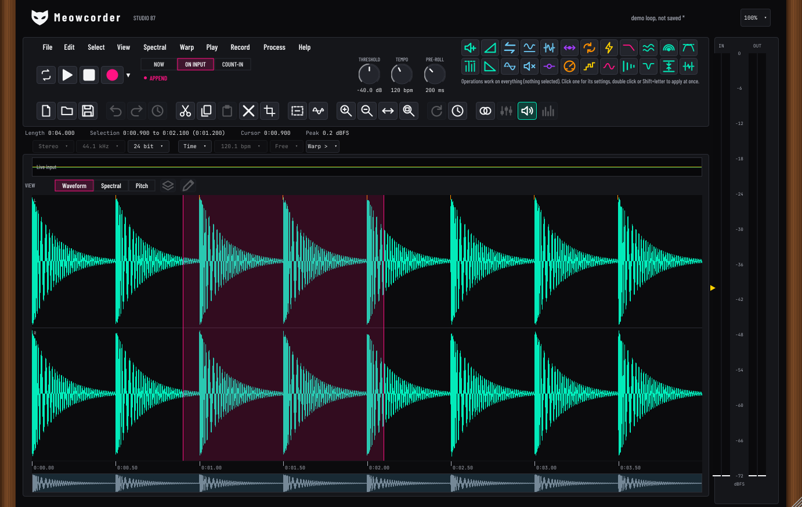

Meowcorder
Recorder and editor, VST3 and Standalone, Linux first · Studio 87
A free audio recorder and editor for Linux first (also Windows and macOS): record from a track or input, cut and process the sound, drop it back. Part of the Studio 87 cat plugin suite.

The plugin editor, rendered offscreen by the repo's snapshot tool with a demo loop loaded. The full design is in the interactive mockup below.
Status: early plugin build, test builds only
The source is at version 0.4 (pitch view and warp); the only GitHub release so far is v0.2.0, a pre-release. The plugin has been built and checked headless but not tried in a real DAW yet, and installers are still to be tested. Buttons for features that are not built yet are greyed out in the plugin.
Get it, read it, try it
Manual (PDF)Interface tour, every control, shortcuts.Interactive mockupThe full design in your browser. Nothing is sent anywhere.ReleasesPre-release builds.Source codeFree and open source, AGPL-3.0-or-later.What exists today
- Pure C++ engine with checks (
sh tests/run.sh). - VST3 and standalone with the window ported from the mockup: record from the track or input, waveform with selection and zoom, spectral view with box tools, pitch view (drag a note to retune it), warp and transpose, undo and redo with a history list, 24 operations with settings and Preview, play and loop, open WAV, AIFF, FLAC and OGG, save as WAV (16, 24 or 32 bit float).
- A PDF manual with an interface tour, built from the mockup by
tools/make_manual.py; release and build workflows in.github/workflows. - No telemetry, no network calls, nothing collected.
What does not exist yet
- Host tempo sync, the pencil tools, the spectral eraser and pencil, and the overlay and split views (the buttons are there, greyed out).
- Dragging the result back into the host and the settings page.
- A test in a real DAW (Bitwig, Ableton) and tested installers.
- The sound you record is not saved inside the project: save it as a WAV to keep it. The name is not final.
AGPL-3.0-or-later. Not affiliated with or endorsed by any hardware maker named here. All trademarks belong to their owners.